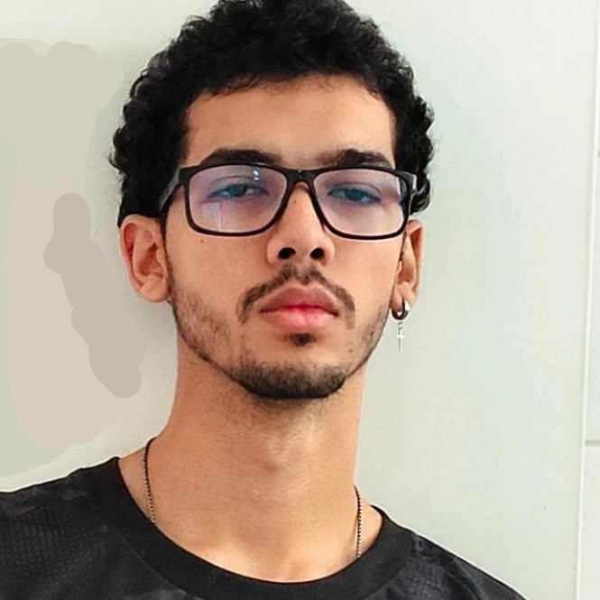
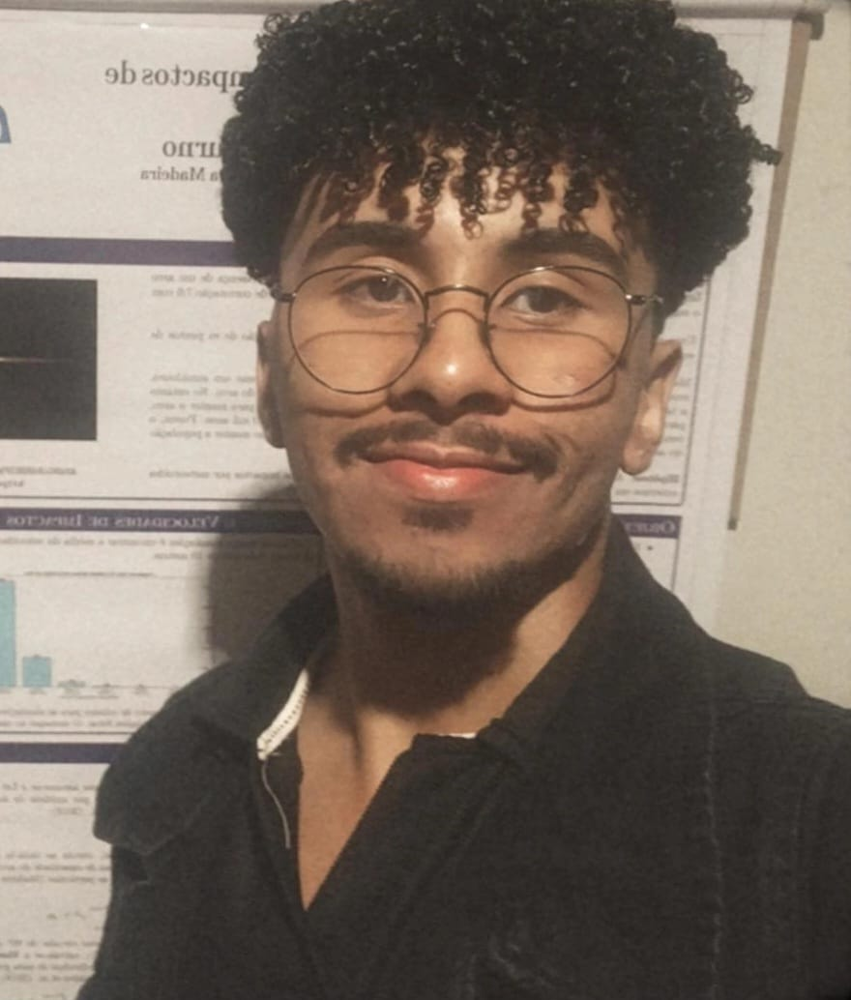
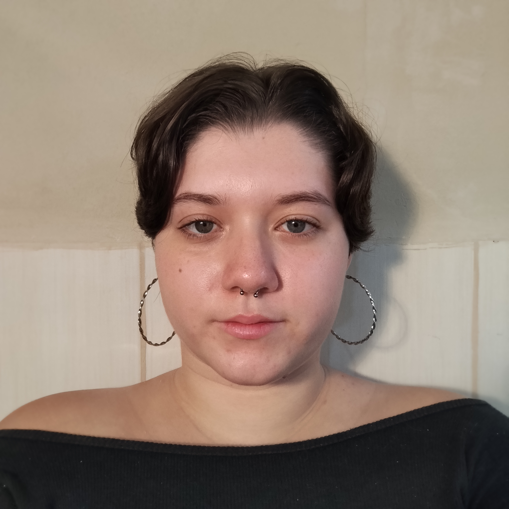
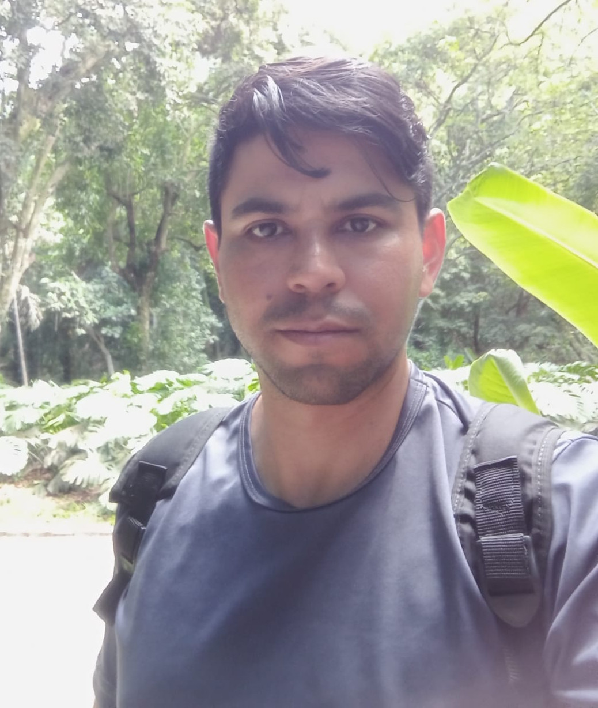

PhD Candidate
Petrônio de Oliveira Silva
Meteor Monitoring and Orbital Determination
2026-STUDENTS AND RESEARCHERS
Meteor Monitoring and Orbital Determination
2026-Dynamic analysis of the Dinkinesh system
2025-Physicochemical Properties of Quaoar rings
2026-
Dynamics of the Aegaeon arc
2025-
Impact modeling in planetary rings
2025-
Wisdom gap for non-spherical objects
2026-
Deflection mechanisms for NEOs on a collision course with Earth
Dynamics around a body with a deep crater